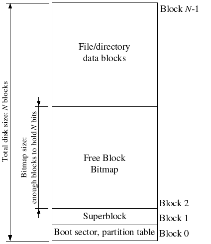
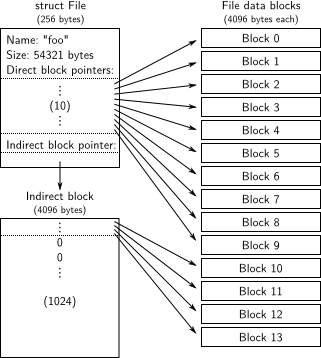
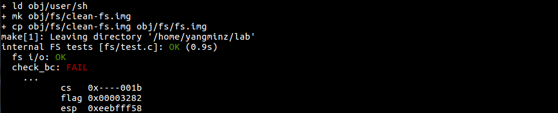
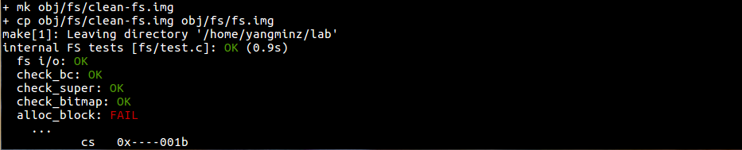
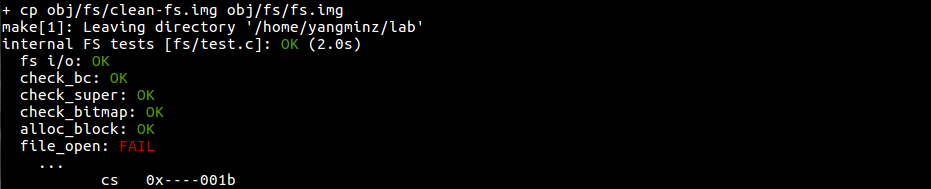
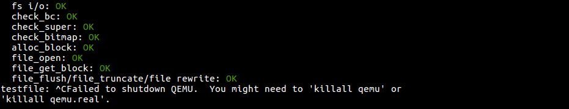
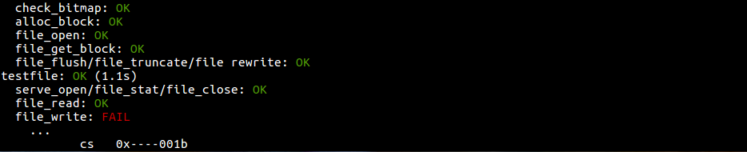
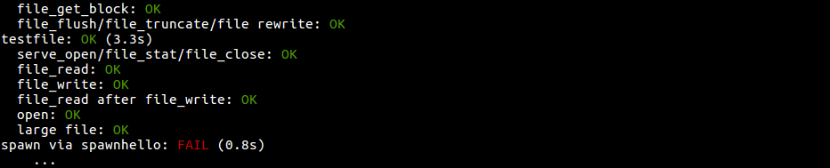

Lab 5: File system, Spawn and Shell
Handed out Thursday, November 3, 2016
Due Thursday, November 17, 2016
实验的代码可以在我的github: https://github.com/yangminz/MITJOS/tree/lab5上找到，或者可以通过bash以下命令：
cd ~ git clone https://github.com/yangminz/MITJOS.git cd MITJOS make grade
来进行查看。
Introduction
In this lab, you will implement spawn, a library call
that loads and runs on-disk executables. You will then flesh out your
kernel and library operating system enough to run a shell on the
console. These features need a file system, and this lab introduces a
simple read/write file system.
Getting Started
Use Git to fetch the latest version of the course repository, and then create a local branch called lab5 based on our lab5 branch, origin/lab5:
athena% cd ~/6.828/lab athena% add git athena% git pull Already up-to-date. athena% git checkout -b lab5 origin/lab5 Branch lab5 set up to track remote branch refs/remotes/origin/lab5. Switched to a new branch "lab5" athena% git merge lab4 Merge made by recursive. ..... athena%
The main new component for this part of the lab is the file system environment, located in the new fs directory. Scan through all the files in this directory to get a feel for what all is new. Also, there are some new file system-related source files in the user and lib directories,
| fs/fs.c | Code that mainipulates the file system's on-disk structure. |
| fs/bc.c | A simple block cache built on top of our user-level page fault handling facility. |
| fs/ide.c | Minimal PIO-based (non-interrupt-driven) IDE driver code. |
| fs/serv.c | The file system server that interacts with client environments using file system IPCs. |
| lib/fd.c | Code that implements the general UNIX-like file descriptor interface. |
| lib/file.c | The driver for on-disk file type, implemented as a file system IPC client. |
| lib/console.c | The driver for console input/output file type. |
| lib/spawn.c | Code skeleton of the spawn library call. |
You should run the pingpong, primes, and forktree test cases from lab
4 again after merging in the new lab 5 code. You will need to comment
out the ENV_CREATE(fs_fs) line in kern/init.c
because fs/fs.c tries to do some I/O, which JOS does not allow
yet.
Similarly, temporarily comment out the call to close_all() in
lib/exit.c; this function calls subroutines that you will implement
later in the lab, and therefore will panic if called.
If your lab 4 code doesn't contain any bugs, the test cases should run
fine. Don't proceed until they work. Don't forget to un-comment
these lines when you start Exercise 1.
If they don't work, use git diff lab4 to review all the changes, making sure there isn't any code you wrote for lab4 (or before) missing from lab 5. Make sure that lab 4 still works.
Lab Requirements
As before, you will need to do all of the regular exercises described in the lab and at least one challenge problem. Additionally, you will need to write up brief answers to the questions posed in the lab and a short (e.g., one or two paragraph) description of what you did to solve your chosen challenge problem. If you implement more than one challenge problem, you only need to describe one of them in the write-up, though of course you are welcome to do more. Place the write-up in a file called answers-lab5.txt in the top level of your lab5 directory before handing in your work.
File system preliminaries
The file system you will work with is much simpler than most "real" file systems including that of xv6 UNIX, but it is powerful enough to provide the basic features: creating, reading, writing, and deleting files organized in a hierarchical directory structure.
We are (for the moment anyway) developing only a single-user operating system, which provides protection sufficient to catch bugs but not to protect multiple mutually suspicious users from each other. Our file system therefore does not support the UNIX notions of file ownership or permissions. Our file system also currently does not support hard links, symbolic links, time stamps, or special device files like most UNIX file systems do.
On-Disk File System Structure
Most UNIX file systems divide available disk space into two main types
of regions:
inode regions and data regions.
UNIX file systems assign one inode to each file in the file system;
a file's inode holds critical meta-data about the file
such as its stat attributes and pointers to its data blocks.
The data regions are divided into much larger (typically 8KB or more)
data blocks, within which the file system stores
file data and directory meta-data.
Directory entries contain file names and pointers to inodes;
a file is said to be hard-linked
if multiple directory entries in the file system
refer to that file's inode.
Since our file system will not support hard links,
we do not need this level of indirection
and therefore can make a convenient simplification:
our file system will not use inodes at all
and instead will simply store all of a file's (or sub-directory's) meta-data
within the (one and only) directory entry describing that file.
Both files and directories logically consist of a series of data blocks,
which may be scattered throughout the disk
much like the pages of an environment's virtual address space
can be scattered throughout physical memory.
The file system environment hides the details of block layout,
presenting interfaces for reading and writing sequences of bytes at
arbitrary offsets within files. The file system environment
handles all modifications to directories internally
as a part of performing actions such as file creation and deletion.
Our file system does allow user environments
to read directory meta-data directly
(e.g., with read),
which means that user environments can perform directory scanning operations
themselves (e.g., to implement the ls program)
rather than having to rely on additional special calls to the file system.
The disadvantage of this approach to directory scanning,
and the reason most modern UNIX variants discourage it,
is that it makes application programs dependent
on the format of directory meta-data,
making it difficult to change the file system's internal layout
without changing or at least recompiling application programs as well.
Sectors and Blocks
Most disks cannot perform reads and writes at byte granularity and instead perform reads and writes in units of sectors. In JOS, sectors are 512 bytes each. File systems actually allocate and use disk storage in units of blocks. Be wary of the distinction between the two terms: sector size is a property of the disk hardware, whereas block size is an aspect of the operating system using the disk. A file system's block size must be a multiple of the sector size of the underlying disk.The UNIX xv6 file system uses a block size of 512 bytes, the same as the sector size of the underlying disk. Most modern file systems use a larger block size, however, because storage space has gotten much cheaper and it is more efficient to manage storage at larger granularities. Our file system will use a block size of 4096 bytes, conveniently matching the processor's page size.
Superblocks

File systems typically reserve certain disk blocks at "easy-to-find" locations on the disk (such as the very start or the very end) to hold meta-data describing properties of the file system as a whole, such as the block size, disk size, any meta-data required to find the root directory, the time the file system was last mounted, the time the file system was last checked for errors, and so on. These special blocks are called superblocks.
Our file system will have exactly one superblock,
which will always be at block 1 on the disk.
Its layout is defined by struct Super in inc/fs.h.
Block 0 is typically reserved to hold boot loaders and partition tables,
so file systems generally do not use the very first disk block.
Many "real" file systems maintain multiple superblocks,
replicated throughout several widely-spaced regions of the disk,
so that if one of them is corrupted
or the disk develops a media error in that region,
the other superblocks can still be found and used to access the file system.
File Meta-data

The layout of the meta-data describing a file in our file system is described bystruct File in inc/fs.h. This
meta-data includes the file's name, size, type (regular file or
directory), and pointers to the blocks comprising the file. As
mentioned above, we do not have inodes, so this meta-data is stored in
a directory entry on disk. Unlike in most "real" file systems, for
simplicity we will use this one File structure to
represent file meta-data as it appears
both on disk and in memory.
The f_direct array in struct File contains space
to store the block numbers
of the first 10 (NDIRECT) blocks of the file,
which we call the file's direct blocks.
For small files up to 10*4096 = 40KB in size,
this means that the block numbers of all of the file's blocks
will fit directly within the File structure itself.
For larger files, however, we need a place
to hold the rest of the file's block numbers.
For any file greater than 40KB in size, therefore,
we allocate an additional disk block, called the file's indirect block,
to hold up to 4096/4 = 1024 additional block numbers.
Our file system therefore allows files to be up to 1034 blocks,
or just over four megabytes, in size.
To support larger files,
"real" file systems typically support
double- and triple-indirect blocks as well.
Directories versus Regular Files
AFile structure in our file system
can represent either a regular file or a directory;
these two types of "files" are distinguished by the type field
in the File structure.
The file system manages regular files and directory-files
in exactly the same way,
except that it does not interpret the contents of the data blocks
associated with regular files at all,
whereas the file system interprets the contents
of a directory-file as a series of File structures
describing the files and subdirectories within the directory.
The superblock in our file system
contains a File structure
(the root field in struct Super)
that holds the meta-data for the file system's root directory.
The contents of this directory-file
is a sequence of File structures
describing the files and directories located
within the root directory of the file system.
Any subdirectories in the root directory
may in turn contain more File structures
representing sub-subdirectories, and so on.
The File System
The goal for this lab is not to have you implement the entire file system, but for you to implement only certain key components. In particular, you will be responsible for reading blocks into the block cache and flushing them back to disk; allocating disk blocks; mapping file offsets to disk blocks; and implementing read, write, and open in the IPC interface. Because you will not be implementing all of the file system yourself, it is very important that you familiarize yourself with the provided code and the various file system interfaces.
Disk Access
The file system environment in our operating system needs to be able to access the disk, but we have not yet implemented any disk access functionality in our kernel. Instead of taking the conventional "monolithic" operating system strategy of adding an IDE disk driver to the kernel along with the necessary system calls to allow the file system to access it, we instead implement the IDE disk driver as part of the user-level file system environment. We will still need to modify the kernel slightly, in order to set things up so that the file system environment has the privileges it needs to implement disk access itself.
It is easy to implement disk access in user space this way as long as we rely on polling, "programmed I/O" (PIO)-based disk access and do not use disk interrupts. It is possible to implement interrupt-driven device drivers in user mode as well (the L3 and L4 kernels do this, for example), but it is more difficult since the kernel must field device interrupts and dispatch them to the correct user-mode environment.
The x86 processor uses the IOPL bits in the EFLAGS register to determine whether protected-mode code is allowed to perform special device I/O instructions such as the IN and OUT instructions. Since all of the IDE disk registers we need to access are located in the x86's I/O space rather than being memory-mapped, giving "I/O privilege" to the file system environment is the only thing we need to do in order to allow the file system to access these registers. In effect, the IOPL bits in the EFLAGS register provides the kernel with a simple "all-or-nothing" method of controlling whether user-mode code can access I/O space. In our case, we want the file system environment to be able to access I/O space, but we do not want any other environments to be able to access I/O space at all.
Exercise 1.
i386_init identifies the file system environment by
passing the type ENV_TYPE_FS to your environment creation
function, env_create.
Modify env_create in env.c,
so that it gives the file system environment I/O privilege,
but never gives that privilege to any other environment.
Make sure you can start the file environment without causing a General Protection fault. You should pass the "fs i/o" test in make grade.
这题要做很简单，只要按照注释说的补上代码就行了：
void
env_create(uint8_t *binary, enum EnvType type)
{
// LAB 3: Your code here.
int ret = 0;
struct Env *e = NULL;
ret = env_alloc(&e, 0);
if(ret < 0){
panic("env_create: %e\n", ret);
}
load_icode(e, binary);
e->env_type = type;
// If this is the file server (type == ENV_TYPE_FS) give it I/O privileges.
// LAB 5: Your code here.
if(type == ENV_TYPE_FS){
e->env_tf.tf_eflags |= FL_IOPL_MASK;
}
}
为什么要给env I/O权限，是因为文件系统环境需要能够自己接触到硬盘。
为什么赋予I/O权限的代码是e->env_tf.tf_eflags |= FL_IOPL_MASK;呢，是因为在80386手册中关于EFLAGS有写道：
8.3.1 I/O Privilege Level
Instructions that deal with I/O need to be restricted but also need to be executed by procedures executing at privilege levels other than zero. For this reason, the processor uses two bits of the flags register to store the I/O privilege level (IOPL). The IOPL defines the privilege level needed to execute I/O-related instructions.
The following instructions can be executed only if CPL <= IOPL:
- IN -- Input
- INS -- Input String
- OUT -- Output
- OUTS -- Output String
- CLI -- Clear Interrupt-Enable Flag
- STI -- Set Interrupt-Enable
These instructions are called "sensitive" instructions, because they are sensitive to IOPL.
To use sensitive instructions, a procedure must execute at a privilege level at least as privileged as that specified by the IOPL (CPL <= IOPL). Any attempt by a less privileged procedure to use a sensitive instruction results in a general protection exception.
Because each task has its own unique copy of the flags register, each task can have a different IOPL. A task whose primary function is to perform I/O (a device driver) can benefit from having an IOPL of three, thereby permitting all procedures of the task to perform I/O. Other tasks typically have IOPL set to zero or one, reserving the right to perform I/O instructions for the most privileged procedures.
A task can change IOPL only with the POPF instruction; however, such changes are privileged. No procedure may alter IOPL (the I/O privilege level in the flag register) unless the procedure is executing at privilege level 0. An attempt by a less privileged procedure to alter IOPL does not result in an exception; IOPL simply remains unaltered.
The POPF instruction may be used in addition to CLI and STI to alter the interrupt-enable flag (IF); however, changes to IF by POPF are IOPL-sensitive. A procedure may alter IF with a POPF instruction only when executing at a level that is at least as privileged as IOPL. An attempt by a less privileged procedure to alter IF in this manner does not result in an exception; IF simply remains unaltered.
看到上面引文中的斜体高亮的句子，就可以知道每个IOPL位是修改在每个env备份的flag寄存器上的。
make grade通过fs i/o:

Question
- Do you have to do anything else to ensure that this I/O privilege setting is saved and restored properly when you subsequently switch from one environment to another? Why?
并不需要，在lab 3 Exercise 2中，与env_create()一起完成的有env_run()。在env_run()中，已经调用了env_pop_tf()来保存了备份的寄存器了。
Note that the GNUmakefile file in this lab sets up QEMU to use the file obj/kern/kernel.img as the image for disk 0 (typically "Drive C" under DOS/Windows) as before, and to use the (new) file obj/fs/fs.img as the image for disk 1 ("Drive D"). In this lab our file system should only ever touch disk 1; disk 0 is used only to boot the kernel. If you manage to corrupt either disk image in some way, you can reset both of them to their original, "pristine" versions simply by typing:
$ rm obj/kern/kernel.img obj/fs/fs.img $ make
or by doing:
$ make clean $ make
Challenge! Implement interrupt-driven IDE disk access, with or without DMA. You can decide whether to move the device driver into the kernel, keep it in user space along with the file system, or even (if you really want to get into the micro-kernel spirit) move it into a separate environment of its own.
The Block Cache
In our file system, we will implement a simple "buffer cache" (really just a block cache) with the help of the processor's virtual memory system. The code for the block cache is in fs/bc.c.
Our file system will be limited to handling disks of size 3GB or less.
We reserve a large, fixed 3GB region
of the file system environment's address space,
from 0x10000000 (DISKMAP)
up to 0xD0000000 (DISKMAP+DISKMAX),
as a "memory mapped" version of the disk.
For example,
disk block 0 is mapped at virtual address 0x10000000,
disk block 1 is mapped at virtual address 0x10001000,
and so on. The diskaddr function in fs/bc.c
implements this translation from disk block numbers to virtual
addresses (along with some sanity checking).
Since our file system environment has its own virtual address space independent of the virtual address spaces of all other environments in the system, and the only thing the file system environment needs to do is to implement file access, it is reasonable to reserve most of the file system environment's address space in this way. It would be awkward for a real file system implementation on a 32-bit machine to do this since modern disks are larger than 3GB. Such a buffer cache management approach may still be reasonable on a machine with a 64-bit address space.
Of course, it would take a long time to read the entire disk into memory, so instead we'll implement a form of demand paging, wherein we only allocate pages in the disk map region and read the corresponding block from the disk in response to a page fault in this region. This way, we can pretend that the entire disk is in memory.
Exercise 2.
Implement the bc_pgfault and flush_block
functions in fs/bc.c.
bc_pgfault is a page fault handler, just like the one
your wrote in the previous lab for copy-on-write fork, except that
its job is to load pages in from the disk in response to a page
fault. When writing this, keep in mind that (1) addr
may not be aligned to a block boundary and (2) ide_read
operates in sectors, not blocks.
The flush_block function should write a block out to disk
if necessary. flush_block shouldn't do anything
if the block isn't even in the block cache (that is, the page isn't
mapped) or if it's not dirty.
We will use the VM hardware to keep track of whether a disk
block has been modified since it was last read from or written to disk.
To see whether a block needs writing,
we can just look to see if the PTE_D "dirty" bit
is set in the uvpt entry.
(The PTE_D bit is set by the processor in response to a
write to that page; see 5.2.4.3 in chapter
5 of the 386 reference manual.)
After writing the block to disk, flush_block should clear
the PTE_D bit using sys_page_map.
Use make grade to test your code. Your code should pass "check_bc", "check_super", and "check_bitmap".
这一题完全可以根据注释写出，只需要记得用fs/ide.c : ide_read()读取磁盘内容即可：
static void
bc_pgfault(struct UTrapframe *utf)
{
void *addr = (void *) utf->utf_fault_va;
uint32_t blockno = ((uint32_t)addr - DISKMAP) / BLKSIZE;
int r;
if (addr < (void*)DISKMAP || addr >= (void*)(DISKMAP + DISKSIZE))
panic("page fault in FS: eip %08x, va %08x, err %04x",
utf->utf_eip, addr, utf->utf_err);
if (super && blockno >= super->s_nblocks)
panic("reading non-existent block %08x\n", blockno);
// LAB 5: you code here:
// round addr to page boundary
addr = ROUNDDOWN(addr, PGSIZE);
// Allocate a page in the disk map region
sys_page_alloc(0, addr, PTE_W|PTE_U|PTE_P);
// Read the contents of the block from the disk
if ((r = ide_read(blockno*BLKSECTS, addr, BLKSECTS)) < 0){
panic("failed to read contents from the disk: %e", r);
}
if ((r = sys_page_map(0, addr, 0, addr, uvpt[PGNUM(addr)] & PTE_SYSCALL)) < 0)
panic("in bc_pgfault, sys_page_map: %e", r);
if (bitmap && block_is_free(blockno))
panic("reading free block %08x\n", blockno);
}
按照注释，要对齐addr，然后用lab 4的sys_page_alloc分配页空间，再调用fs/ide.c中的ide_read()将磁盘中的内容读入页空间即可。
关于flush_block()函数，从检查函数check_bc()可以看到，它的形参是磁盘地址。然后根据注释的要求，用va_is_mapped(), va_is_dirty()进行检查：
void
flush_block(void *addr)
{
uint32_t blockno = ((uint32_t)addr - DISKMAP) / BLKSIZE;
if (addr < (void*)DISKMAP || addr >= (void*)(DISKMAP + DISKSIZE))
panic("flush_block of bad va %08x", addr);
// LAB 5: Your code here.
void *blkaddr = ROUNDDOWN(addr, PGSIZE);
envid_t envid = thisenv->env_id;
// If the block is not in the block cache or is not dirty, does nothing.
if (!va_is_mapped(addr) || !va_is_dirty(addr)){
return;
}
// After writing the block to disk, flush_block should clear the PTE_D bit using sys_page_map
if (ide_write(blockno * BLKSECTS, blkaddr, BLKSECTS) < 0){
panic("flush_block: failed to write disk block\n");
}
// Use the PTE_SYSCALL constant when calling sys_page_map
if(sys_page_map(envid, blkaddr, envid, blkaddr, PTE_SYSCALL) < 0){
panic("flush_block: failed to mark disk page as non dirty\n");
}
}
实际上具体流程在蓝框中的题目里也说的很详细了：先确定如果不在block cache中或是dirty的，就直接返回；否则，根据PTE_D的dirty位确定是否需要写block，写过block之后用sys_page_map清理PTE_D位。
make grade结果如下：

The
fs_init function in fs/fs.c is a prime
example of how to use the block cache. After initializing the block
cache, it simply stores pointers into the disk map region in the
super global variable.
After this point, we can simply read from the super
structure as if they were in memory and our page fault handler will
read them from disk as necessary.
Challenge!
The block cache has no eviction policy. Once a block gets faulted in
to it, it never gets removed and will remain in memory forevermore.
Add eviction to the buffer cache. Using the PTE_A
"accessed" bits in the page tables, which the hardware sets on any
access to a page, you can track approximate usage of
disk blocks without the need to modify every place in the code that
accesses the disk map region. Be careful with dirty blocks.
The Block Bitmap
Afterfs_init sets the bitmap pointer, we
can treat bitmap as a packed array of bits, one for each
block on the disk. See, for example, block_is_free,
which simply checks whether a given block is marked free in the
bitmap.
Exercise 3.
Use free_block as a model to
implement alloc_block in fs/fs.c, which should find a
free disk
block in the bitmap, mark it used, and return the number of that
block.
When you allocate a block, you should immediately flush
the changed bitmap block to disk with flush_block, to
help file system consistency.
Use make grade to test your code. Your code should now pass "alloc_block".
此题需要遍历bitmap找到其中空闲的disk block，将它标记为used，返还这个block的编号作为被分配出来的block。且需要调用之前写的flush_block()以保持文件系统的一致性。
所以，先看一下bitmap的组织。bitmap的定义在fs/fs.h：
uint32_t *bitmap; // bitmap blocks mapped in memory
初始化分配内存在fs/fsformat.c：
nbitblocks = (nblocks + BLKBITSIZE - 1) / BLKBITSIZE;
bitmap = alloc(nbitblocks * BLKSIZE);
memset(bitmap, 0xFF, nbitblocks * BLKSIZE);
可见bitmap实际上是一个保存所有block的内存数组。这样一来，如何遍历bitmap也就清楚了：
int
alloc_block(void)
{
// LAB 5: Your code here.
uint32_t i, j;
// There are super->s_nblocks blocks in the disk altogether.
for(i = 0; i < super->s_nblocks; i++){
if(block_is_free(i)){
// use free_block as an example for manipulating the bitmap
bitmap[i/32] &= ~(1<<(i%32));
// immediately flush the changed bitmap block to disk
flush_block(diskaddr(i/BLKBITSIZE + 2));
// Return block number allocated on success
return i;
}
}
// panic("alloc_block not implemented");
return -E_NO_DISK;
}
其中要注意的是，将block从free设定为used要仿照fs/fs.c : free_block()进行一些位运算。free_block()是设为free，设为used只需反其道而行之。
make grade通过了alloc_block：

File Operations
We have provided a variety of functions in fs/fs.c
to implement the basic facilities you will need
to interpret and manage File structures,
scan and manage the entries of directory-files,
and walk the file system from the root
to resolve an absolute pathname.
Read through all of the code in fs/fs.c
and make sure you understand what each function does
before proceeding.
Exercise 4. Implement
file_block_walk
and file_get_block. file_block_walk maps
from a block offset within a file to the pointer for that block in the
struct File or the indirect block, very much like what
pgdir_walk did for page tables.
file_get_block goes one step further and maps to the
actual disk block, allocating a new one if necessary.
Use make grade to test your code. Your code should pass "file_open", "file_get_block", and "file_flush/file_truncated/file rewrite", and "testfile".
到这里和文件的Meta-Data有关，可以参看最前面的File Meta-data一节。JOS中用没有inode的Meta-data来描述文件，包括了文件名、文件大小、文件类型、文件数据指针，meta-data直接作为一个directory entry存放在硬盘上。
对于一个文件而言，前10个block是direct blocks。[0, 9]记录了文件的基本信息，占据的大小是10 * 4096 = 40KB。对于小于40KB的文件，直接用direct blocks就能存储了，但是对于大于40KB的文件，必须要增加磁盘block以存储更多数据，这些block就是indirect block，至多有1024个。因此，这部分blocks的区间是[10, 1033]，更大的文件就需要其他特殊的处理了。
file_block_walk()
static int
file_block_walk(struct File *f, uint32_t filebno, uint32_t **ppdiskbno, bool alloc)
{
// LAB 5: Your code here.
uint32_t blkno;
// filebno in [0, 9]
if(filebno <= 9){
// Set '*ppdiskbno' to point to one of the f->f_direct[] entries
*ppdiskbno = &f->f_direct[filebno];
}
// filebno in [10, 1033]
else if(filebno <= 1033){
if (!f->f_indirect){
if(!alloc){
return -E_NOT_FOUND;
}
// When 'alloc' is set, allocate an indirect block if necessary.
blkno = alloc_block();
// -E_NO_DISK if there's no space on the disk for an indirect block.
if (blkno < 0){
return -E_NO_DISK;
}
f->f_indirect = blkno;
memset(diskaddr(blkno), 0, BLKSIZE);
}
// Set '*ppdiskbno' to point to an entry in the indirect block
*ppdiskbno = &((uintptr_t *) diskaddr(f->f_indirect))[filebno - 10];
}
// filebno in [1034, inf)
else{
return -E_INVAL;
}
return 0;
//panic("file_block_walk not implemented");
}
对于文件block，根据它的编号filebno确定它在[0, 9], [10, 1033], [1034, inf)哪个区间内，再分别根据区间情况按照注释讨论即可。
file_get_block()
int
file_get_block(struct File *f, uint32_t filebno, char **blk)
{
// LAB 5: Your code here.
uint32_t *diskbno = NULL;
uint32_t err_type = file_block_walk(f, filebno, &diskbno, 1);
if(err_type < 0)
return err_type;
if(! *diskbno){
uint32_t block_no = alloc_block();
// -E_NO_DISK if a block needed to be allocated but the disk is full.
if (block_no < 0){
return -E_NO_DISK;
}
*diskbno = block_no;
}
// Set *blk to the address in memory where the filebno'th
// block of file 'f' would be mapped.
*blk = (char *)diskaddr(*diskbno);
return 0;
//panic("file_get_block not implemented");
}
按照注释提示，file_get_block()要根据file_block_walk()返还的错误信息进行讨论。对于正常情况(err_type == 0)，要根据传入file_block_walk()中的diskbno是否为0来补上file_block_walk()中 *ppdiskbno == 0的情况。
make grade的结果如图：

file_block_walk and file_get_block are the
workhorses of the file system. For example, file_read
and file_write are little more than the bookkeeping atop
file_get_block necessary to copy bytes between scattered
blocks and a sequential buffer.
Challenge! The file system is likely to be corrupted if it gets interrupted in the middle of an operation (for example, by a crash or a reboot). Implement soft updates or journalling to make the file system crash-resilient and demonstrate some situation where the old file system would get corrupted, but yours doesn't.
The file system interface
Now that we have the necessary functionality within the file system environment itself, we must make it accessible to other environments that wish to use the file system. Since other environments can't directly call functions in the file system environment, we'll expose access to the file system environment via a remote procedure call, or RPC, abstraction, built atop JOS's IPC mechanism. Graphically, here's what a call to the file system server (say, read) looks like
Regular env FS env
+---------------+ +---------------+
| read | | file_read |
| (lib/fd.c) | | (fs/fs.c) |
...|.......|.......|...|.......^.......|...............
| v | | | | RPC mechanism
| devfile_read | | serve_read |
| (lib/file.c) | | (fs/serv.c) |
| | | | ^ |
| v | | | |
| fsipc | | serve |
| (lib/file.c) | | (fs/serv.c) |
| | | | ^ |
| v | | | |
| ipc_send | | ipc_recv |
| | | | ^ |
+-------|-------+ +-------|-------+
| |
+-------------------+
|
Everything below the dotted line is simply the mechanics of getting a
read request from the regular environment to the file system
environment. Starting at the beginning, read (which we
provide) works on any file descriptor and simply dispatches to the
appropriate device read function, in this case
devfile_read (we can have more device types, like pipes).
devfile_read
implements read specifically for on-disk files. This and
the other devfile_* functions in lib/file.c
implement the client side of the FS operations and all work in roughly
the same way, bundling up arguments in a request structure, calling
fsipc to send the IPC request, and unpacking and
returning the results. The fsipc function simply handles
the common details of sending a request to the server and receiving
the reply.
The file system server code can be found in fs/serv.c. It
loops in the serve function, endlessly receiving a
request over IPC, dispatching that request to the appropriate handler
function, and sending the result back via IPC. In the read example,
serve will dispatch to serve_read, which
will take care of the IPC details specific to read requests such as
unpacking the request structure and finally call
file_read to actually perform the file read.
Recall that JOS's IPC mechanism lets an environment send a single
32-bit number and, optionally, share a page. To send a request from
the client to the server, we use the 32-bit number for the request
type (the file system server RPCs are numbered, just like how
syscalls were numbered) and store the arguments to the request in a
union Fsipc on the page shared via the IPC. On the
client side, we always share the page at fsipcbuf; on the
server side, we map the incoming request page at fsreq
(0x0ffff000).
The server also sends the response back via IPC. We use the 32-bit
number for the function's return code. For most RPCs, this is all
they return. FSREQ_READ and FSREQ_STAT also
return data, which they simply write to the page that the client sent
its request on. There's no need to send this page in the response
IPC, since the client shared it with the file system server in the
first place. Also, in its response, FSREQ_OPEN shares with
the client a new "Fd page". We'll return to the file descriptor
page shortly.
Exercise 5.
Implement serve_read in fs/serv.c.
serve_read's heavy lifting will be done by
the already-implemented file_read in fs/fs.c
(which, in turn, is just a bunch of calls to
file_get_block). serve_read just has to
provide the RPC interface for file reading. Look at the comments and
code in serve_set_size to get a general idea of how the
server functions should be structured.
Use make grade to test your code. Your code should pass "serve_open/file_stat/file_close" and "file_read" for a score of 70/150.
IPC在linux中指进程间通信 - Inter-Process Communication。对于常规的env而言，无法直接调用文件系统env中的函数，因此在JOS中通过远程进程调用RPC - Remote Procedure Call来充当IPC，将文件系统env看做一个server，常规env看做一个client，通过ipc_send, ipc_recv完成(颇类似于socket通信，文件系统server和一般的server一样，出于永不停息的循环之中，不停地收发文件处理信息)，在上面MIT的讲解中有说明。
在这里要实现常规env和文件系统env之间的通信，是文件系统server端的倒数第二环。server_read需要为文件读取提供进程通信RPC的接口。为了实现这个目的，要学习一下fs/serv.c : serv_set_size()中关于IPC/RPC的使用。
按照fs/serv.c : serv_set_size()中的套路，要设定一个结构体指针OpenFile *o，将查找到的目标文件的信息放在o中，然后调用fs/fs.c中相关的函数即可：
int
serve_read(envid_t envid, union Fsipc *ipc)
{
struct Fsreq_read *req = &ipc->read;
struct Fsret_read *ret = &ipc->readRet;
if (debug)
cprintf("serve_read %08x %08x %08x\n", envid, req->req_fileid, req->req_n);
// Lab 5: Your code here:
struct OpenFile *o;
int r;
// First, use openfile_lookup to find the relevant open file.
// On failure, return the error code to the client with ipc_send.
if ((r = openfile_lookup(envid, req->req_fileid, &o)) < 0)
return r;
// Second, call the relevant file system function (from fs/fs.c).
// On failure, return the error code to the client.
ssize_t sz = file_read(o->o_file, (void *)ret->ret_buf, MIN(req->req_n, PGSIZE), o->o_fd->fd_offset);
if(sz > 0){
o->o_fd->fd_offset += sz;
}
return sz;
}
make grade按要求通过：

Exercise 6.
Implement serve_write in fs/serv.c and
devfile_write in lib/file.c.
Use make grade to test your code. Your code should pass "file_write", "file_read after file_write", "open", and "large file" for a score of 90/150.
fs/serv.c:serve_write()
和Exercise 5一样的套路，用OpenFile结构体指针，到fs/fs.c中去找相应的函数来调用，结合注释的提示将输入改为req->req_buf：
int
serve_write(envid_t envid, struct Fsreq_write *req)
{
if (debug)
cprintf("serve_write %08x %08x %08x\n", envid, req->req_fileid, req->req_n);
// LAB 5: Your code here.
struct OpenFile *o;
int r;
// First, use openfile_lookup to find the relevant open file.
// On failure, return the error code to the client with ipc_send.
if ((r = openfile_lookup(envid, req->req_fileid, &o)) < 0)
return r;
// Second, call the relevant file system function (from fs/fs.c).
// On failure, return the error code to the client.
ssize_t sz = MIN(req->req_n, PGSIZE - (sizeof(int) + sizeof(size_t)));
sz = file_write(o->o_file, (void *)req->req_buf, sz, o->o_fd->fd_offset);
if(sz > 0){
o->o_fd->fd_offset += sz;
}
return sz;
}
lib/file.c:devfile_write()
根据注释来写：
static ssize_t
devfile_write(struct Fd *fd, const void *buf, size_t n)
{
uint32_t max_n = PGSIZE - (sizeof(int) + sizeof(size_t));
// Write at most 'n' bytes from 'buf' to 'fd' at the current seek position.
n = n > max_n ? max_n : n;
fsipcbuf.write.req_fileid = fd->fd_file.id;
fsipcbuf.write.req_n = n;
// Becareful: fsipcbuf.write.req_buf is only so large, but
// remember that write is always allowed to write *fewer*
// bytes than requested.
memmove(fsipcbuf.write.req_buf, buf, n);
// Make an FSREQ_WRITE request to the file system server
// The number of bytes successfully written.
return fsipc(FSREQ_WRITE, NULL);
//panic("devfile_write not implemented");
}
make grade通过这阶段的检查：

Spawning Processes
We have given you the code for spawn (see lib/spawn.c)
which creates a new environment,
loads a program image from the file system into it,
and then starts the child environment running this program.
The parent process then continues running independently of the child.
The spawn function effectively acts like a fork in UNIX
followed by an immediate exec in the child process.
We implemented spawn rather than a
UNIX-style exec because spawn is easier to
implement from user space in "exokernel fashion", without special help
from the kernel. Think about what you would have to do in order to
implement exec in user space, and be sure you understand
why it is harder.
Exercise 7.
spawn relies on the new syscall
sys_env_set_trapframe to initialize the state of the
newly created environment. Implement
sys_env_set_trapframe in kern/syscall.c (don't forget to dispatch the new system call in syscall()).
Test your code by running the user/spawnhello program from kern/init.c, which will attempt to spawn /hello from the file system.
Use make grade to test your code.
Challenge!
Implement Unix-style exec.
Challenge!
Implement mmap-style memory-mapped files and
modify spawn to map pages directly from the ELF
image when possible.
Sharing library state across fork and spawn
The UNIX file descriptors are a general notion that also
encompasses pipes, console I/O, etc. In JOS, each of these device
types has a corresponding struct Dev,
with pointers to the functions that implement
read/write/etc. for that device type. lib/fd.c implements the
general UNIX-like file descriptor interface on top of this. Each
struct Fd indicates its device type, and most of the
functions in lib/fd.c simply dispatch operations to functions
in the appropriate struct Dev.
lib/fd.c also maintains the file descriptor table
region in each application environment's address space, starting at
FDTABLE. This area reserves a page's worth (4KB) of
address space for each of the up to MAXFD (currently 32)
file descriptors the application can have open at once. At any given
time, a particular file descriptor table page is mapped if and only if
the corresponding file descriptor is in use. Each file descriptor
also has an optional "data page" in the region starting at
FILEDATA, which devices can use if they choose.
We would like to share file descriptor state across
fork and spawn, but file descriptor state is kept
in user-space memory. Right now, on fork, the memory
will be marked copy-on-write,
so the state will be duplicated rather than shared.
(This means environments won't be able to seek in files they
didn't open themselves and that pipes won't work across a fork.)
On spawn, the memory will be
left behind, not copied at all. (Effectively, the spawned environment
starts with no open file descriptors.)
We will change fork to know that
certain regions of memory are used by the "library operating system" and
should always be shared. Rather than hard-code a list of regions somewhere,
we will set an otherwise-unused bit in the page table entries (just like
we did with the PTE_COW bit in fork).
We have defined a new PTE_SHARE bit
in inc/lib.h.
This bit is one of the three PTE bits
that are marked "available for software use"
in the Intel and AMD manuals.
We will establish the convention that
if a page table entry has this bit set,
the PTE should be copied directly from parent to child
in both fork and spawn.
Note that this is different from marking it copy-on-write:
as described in the first paragraph,
we want to make sure to share
updates to the page.
Exercise 8.
Change duppage in lib/fork.c to follow
the new convention. If the page table entry has the PTE_SHARE
bit set, just copy the mapping directly.
(You should use PTE_SYSCALL, not 0xfff,
to mask out the relevant bits from the page table entry. 0xfff
picks up the accessed and dirty bits as well.)
Likewise, implement copy_shared_pages in
lib/spawn.c. It should loop through all page table
entries in the current process (just like fork
did), copying any page mappings that have the
PTE_SHARE bit set into the child process.
Use make run-testpteshare to check that your code is behaving properly. You should see lines that say "fork handles PTE_SHARE right" and "spawn handles PTE_SHARE right".
Use make run-testfdsharing to check that file descriptors are shared properly. You should see lines that say "read in child succeeded" and "read in parent succeeded".
The keyboard interface
For the shell to work, we need a way to type at it. QEMU has been displaying output we write to the CGA display and the serial port, but so far we've only taken input while in the kernel monitor. In QEMU, input typed in the graphical window appear as input from the keyboard to JOS, while input typed to the console appear as characters on the serial port. kern/console.c already contains the keyboard and serial drivers that have been used by the kernel monitor since lab 1, but now you need to attach these to the rest of the system.
Exercise 9.
In your kern/trap.c, call kbd_intr to handle trap
IRQ_OFFSET+IRQ_KBD and serial_intr to
handle trap IRQ_OFFSET+IRQ_SERIAL.
We implemented the console input/output file type for you,
in lib/console.c. kbd_intr and serial_intr
fill a buffer with the recently read input while the console file
type drains the buffer (the console file type is used for stdin/stdout by
default unless the user redirects them).
Test your code by running make run-testkbd and type a few lines. The system should echo your lines back to you as you finish them. Try typing in both the console and the graphical window, if you have both available.
The Shell
Run make run-icode or make run-icode-nox. This will run your kernel and start user/icode. icode execs init, which will set up the console as file descriptors 0 and 1 (standard input and standard output). It will then spawn sh, the shell. You should be able to run the following commands:
echo hello world | cat cat lorem |cat cat lorem |num cat lorem |num |num |num |num |num lsfd
Note that the user library routine cprintf
prints straight
to the console, without using the file descriptor code. This is great
for debugging but not great for piping into other programs.
To print output to a particular file descriptor (for example, 1, standard output),
use fprintf(1, "...", ...).
printf("...", ...) is a short-cut for printing to FD 1.
See user/lsfd.c for examples.
Exercise 10.
The shell doesn't support I/O redirection. It would be nice to run
sh <script instead of having to type in all the
commands in the script by hand, as you did above. Add
I/O redirection for < to user/sh.c.
Test your implementation by typing sh <script into
your shell
Run make run-testshell to test your shell. testshell simply feeds the above commands (also found in fs/testshell.sh) into the shell and then checks that the output matches fs/testshell.key.
Challenge! Add more features to the shell. Possibilities include (a few require changes to the file system too):
- backgrounding commands (
ls &) - multiple commands per line (
ls; echo hi) - command grouping (
(ls; echo hi) | cat > out) - environment variable expansion (
echo $hello) - quoting (
echo "a | b") - command-line history and/or editing
- tab completion
- directories, cd, and a PATH for command-lookup.
- file creation
- ctl-c to kill the running environment
Your code should pass all tests at this point. As usual, you can grade your submission with make grade and hand it in with make handin.
This completes the lab. As usual, don't forget to run make grade and to write up your answers and a description of your challenge exercise solution. Before handing in, use git status and git diff to examine your changes and don't forget to git add answers-lab5.txt. When you're ready, commit your changes with git commit -am 'my solutions to lab 5', then make handin to submit your solution.